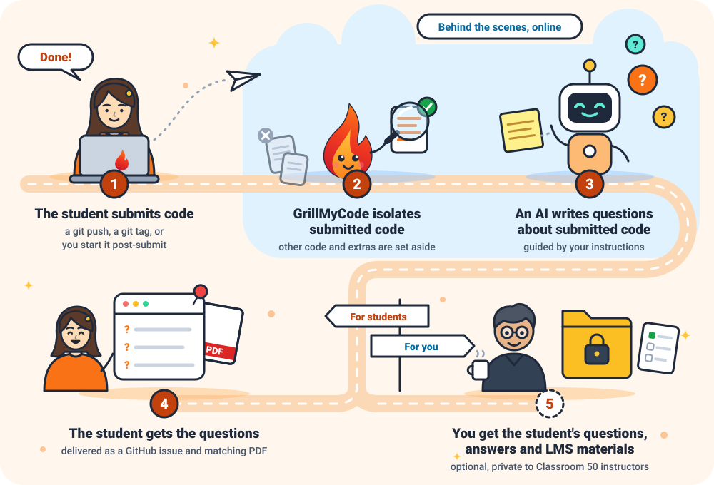
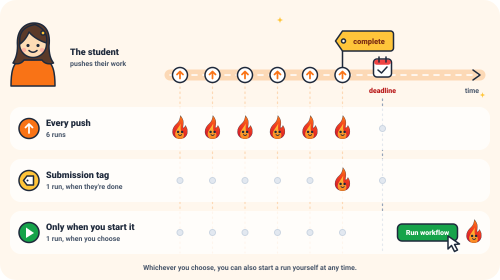
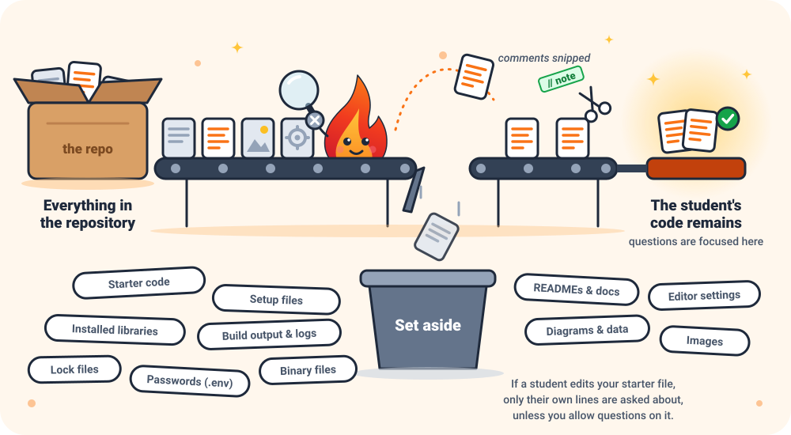
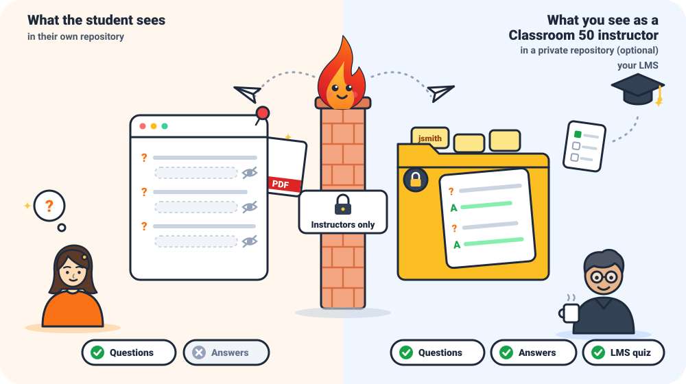
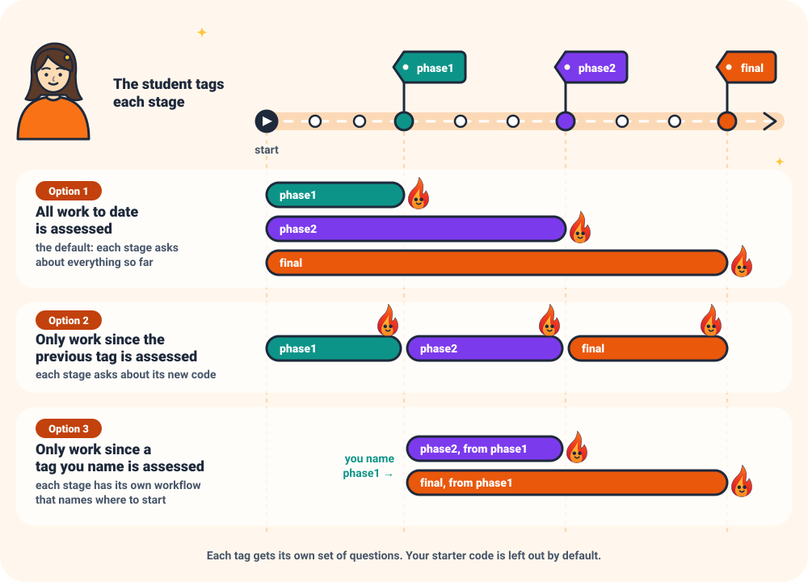
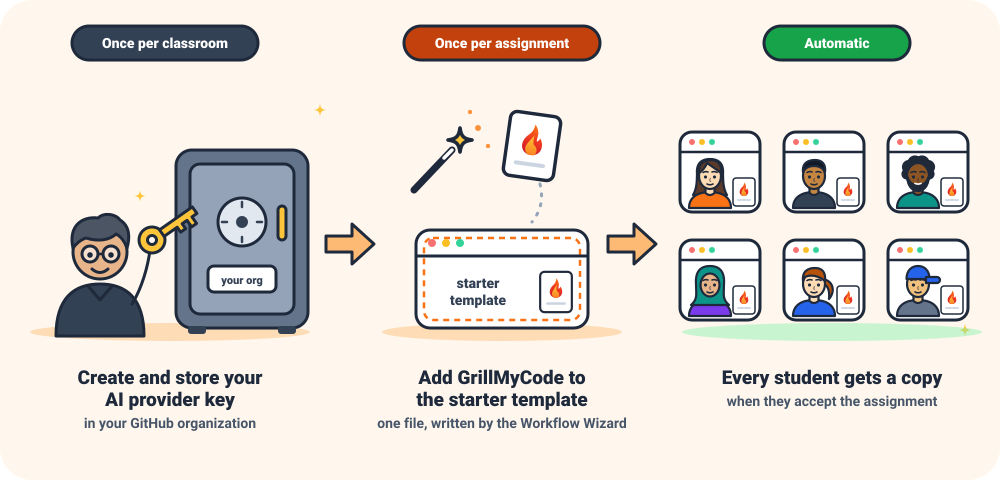
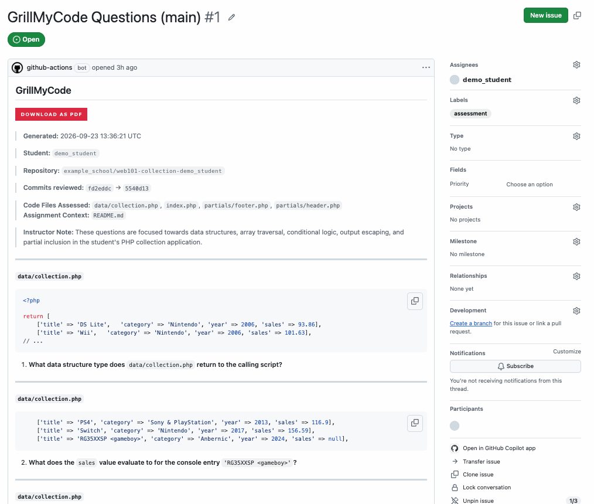
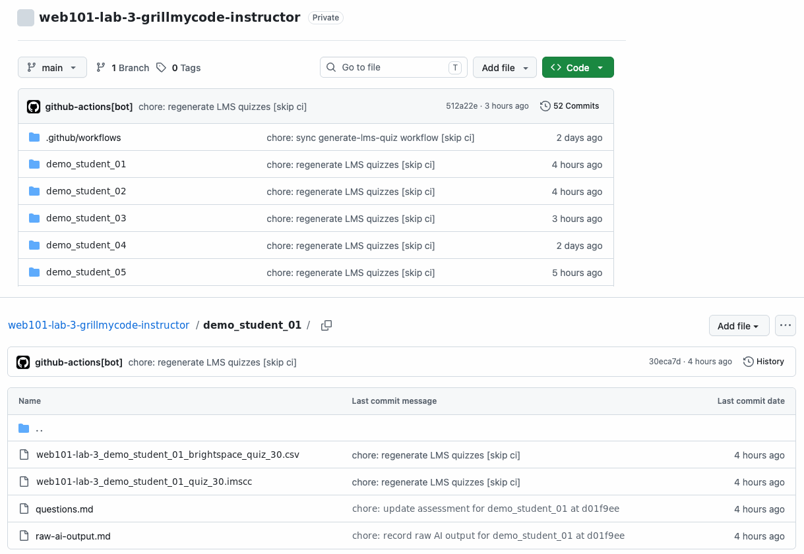
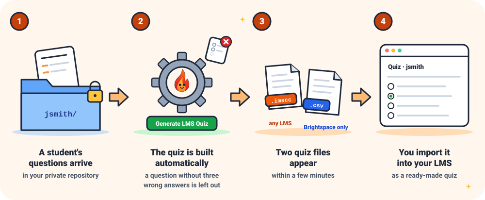
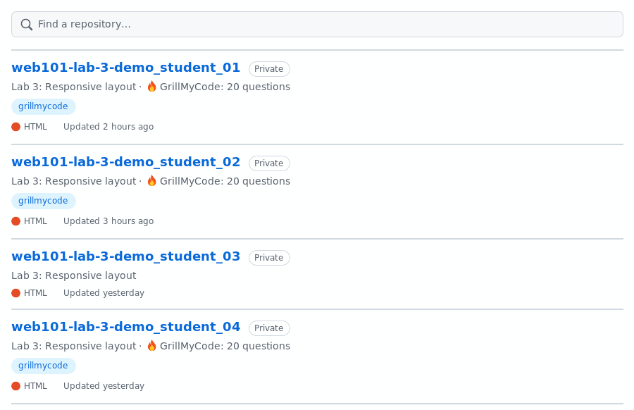

Questions about each student's own code, ready for a code viva
Use ← → arrow keys or swipe to navigate · Press F for full screen
The Problem
A working submission doesn't answer the question that matters:
"Does the student actually understand the code they handed in?"
Copied or AI-written code looks just like the student's own
Writing good questions for every student takes hours
Plagiarism checkers find similar code, not a lack of understanding
What is GrillMyCode?
It runs automatically in each student's GitHub repository, and uses AI to write
questions about the code that student wrote, ready for a
short conversation or written check. It doesn't grade: it does the preparation, and you
have the conversation.
🎯
Questions about their code
Every student gets their own set, quoting their own code
⚡
Nothing for students to set up
They work and push as usual
🎓
Built for Classroom 50
Your starter code is never mistaken for student work
🪙
Low cost
Can be less than one cent per assessment, though the model chosen can raise it sharply
How It Works

When It Runs
You choose. Whichever you pick, you can also start a run yourself at any time.
⬆️
Every pushFresh questions each time the student pushes. Best for short assignments and practice while they work.
🏷️
Submission tagOnly when the student pushes a tag you named, such as complete or phase1. One assessment per milestone.
▶️
Only when you sayYou press Run workflow, for example once after the deadline.
Students can resubmit under the same tag. Every resubmission is recorded, and the earlier questions are kept for you.
One Student, Three Choices

Only the Student's Own Code

Your starter code, setup files and generated files are set aside before the AI sees anything.
Comments Are Removed
What the student wrote
# Add two numbers together
def add(a, b):
# Return the sum
return a + b
What the AI sees
def add(a, b):
return a + b
So the questions are about what the code does, not
about the notes the student left.
You can turn this off when the comments are the work.
What's Delivered
The issue and PDF are automatic. The answer key and LMS quizzes need a one-time setup.
📝
GitHub issueIn the student's repository, assigned to them and pinned. Updated in place, so the link never changes.
📄
PDFThe same questions, ready to print, linked from the top of the issue.
🔒
Private answer keyEvery student's questions with answers, in a repository only instructors can see. Classroom 50 only.
🧮
LMS quizA multiple-choice quiz per student, for Brightspace, Canvas, Moodle and most others.
Who Sees What

Cost and Models
One key for the whole class. You set up one OpenRouter account and save its key once for your classroom.
Can be less than one cent per assessment. With a low-cost model, a small budget can last a large class a semester. The cost can rise sharply with the model chosen and its settings, so instructors should do a few trial runs to estimate their own cost first.
Prepaid, so spending can't run past what you've added.
Your choice of model, from Google, Anthropic, DeepSeek and many more, if you want sharper questions for advanced courses.
Built for Classroom 50
Add it to the template once, and every student who accepts the assignment gets it
Starter code is skipped by default: only what the student wrote after accepting is assessed
Questions go to the right student, whoever pushed or started the run
Milestone tags work together: one tag push can both grade a milestone and generate its questions
Milestone Tags

What You Can Adjust
🔢
How many questions
From 1 to 50; 20 by default
🧭
What they focus on
A few sentences of instructions, plus the brief or rubric if you like
📂
Which files count
Leave out extra files, or bring back ones normally skipped
⏱️
When it runs
Every push, on submission, or only when you say
How Much Setup?

Getting Started in Four Steps
1
Set up an OpenRouter key Once for your whole classroom
2
Build your workflow with the Workflow Wizard Answer a few questions; it writes the file for you
3
Add it to the assignment's template repository One file, committed once per assignment
4
Check the first run About 15 minutes end to end
You'll need basic Git and GitHub skills: committing, pushing, branches, finding your way around a repository and, if you use submission tags, tagging.
What the Student Sees
An issue in their repository, assigned to them:
GrillMyCode Questions (main)
calculator.py, lines 12–15
def divide(a, b):
if b == 0:
return None
return a / b
1. What does divide(6, 0) return, and why?
2. …
Each new run updates the same issue, with a note:
ℹ️ The assessment questions in this issue were regenerated at commit a1b2c3d and the questions have been updated. Any previous questions have been replaced.
A PDF of the same questions is linked from the top of the issue. Students never see the answers.
In VS Code, an optional extension shows each question beside the code it asks about.
The Real Thing

What You See
With the private answer key set up (Classroom 50 only), each assignment gets a private repository with a folder per student:
🔑
Questions and answersEvery question with its answer, always up to date.
🧮
A ready-made quizImport it into your LMS and have the student answer it there.
🚩
Resubmissions flaggedSee who resubmitted, and compare the old questions with the new.
Inside the Answer Key

One private repository per assignment, one folder per student. Classroom 50 only.
From Questions to Quiz

See Who Has Questions

Assessed repositories are labelled in your organization's repository list, with a question count.
GrillMyCode
Personalized questions about every student's own code, delivered automatically,
for as little as less than one cent per assessment, depending on the model.